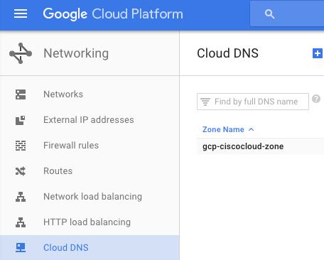

GCP Cloud DNS¶
Terraform can use google_dns_record_set resources to provide DNS records for your cluster.
In addition to the normal DNS variables, you will need to specify the managed_zone parameter. You can find your Managed Zone name in the GCP Netowrking Console.
If you haven’t set up a managed zone for the domain you’re using, you can do that with Terraform as well, just add this extra snippet in your .tf file:
resource "google_dns_managed_zone" "managed-zone" {
name = "my-managed-zone"
dns_name = "example.com."
description "Managed zone for example.com."
}
In your gce.tf, you will want to enable the cloud-dns module:
module "cloud-dns" {
source = "./terraform/gce/dns"
control_count = "${var.control_count}"
control_ips = "${module.control-nodes.control_ips}"
domain = "mydomain.com"
edge_count = "${var.edge_count}"
edge_ips = "${module.edge-nodes.edge_ips}"
lb_ip = "${module.network-lb.public_ip}"
managed_zone = "my-cloud-dns-zone"
short_name = "${var.short_name}"
subdomain = "service"
worker_count = "${var.worker_count}"
worker_ips = "${module.worker-nodes.worker_ips}"
}